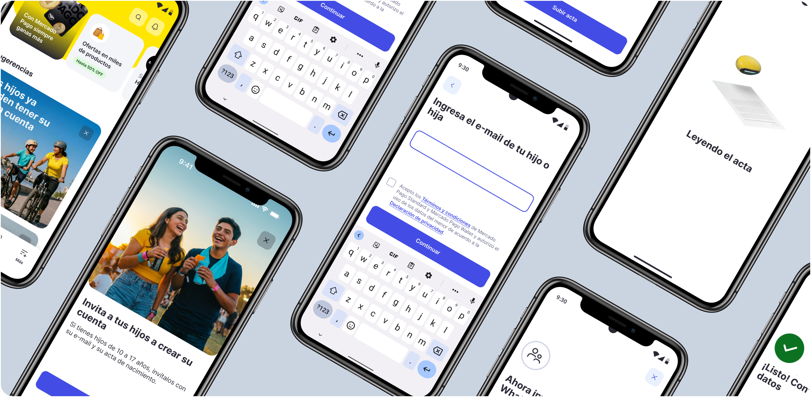

Accounts for minors
in Mexico

Objectives
- Build loyalty with new users from an early age.
- Enable accounts for minors in Mexico in line with local regulation.
Outcomes
- Shorten the response process from 24 hours to 20 seconds using artificial intelligence.
Context
Mercado Pago allows minors to have their own financial account with authorization from a responsible adult. How the account is created varies with each country’s financial regulations.
When I joined the project, the product already existed in Argentina and Brazil. The next step was to bring it to Mexico and adapt it to local regulation. Mexico had the most complex regulatory requirements we had faced so far. Rather than localizing the same product, we needed to design the experience from scratch.
Challenges in the Mexican context
- Minors in Mexico do not have the identity document used in this verification flow until they turn 18.
- A minor cannot create an account independently: without that document, they cannot complete the identity verification required for a fintech account.
- Under local regulation, only the minor’s mother or father can authorize the account, and that relationship must be verified.
- For regulatory purposes, the minor’s account is a subaccount of the adult’s account. It cannot operate if the adult withdraws authorization.
A redesigned experience
Creating an account requires the following steps:
1. Entering information
The parent enters the minor’s email and accepts the legal terms as the responsible adult.
2. Verifying identity
Because the minor does not have an official identity document for this flow in Mexico, the adult uploads the birth certificate.
3. Sending the invitation
After confirming the minor’s identity, an invitation is sent by email and also through WhatsApp.
4. The minor creates an account
With the invitation, the minor can finish creating an account through a personalized experience.
The adult and minor journey
user: Adult
user: Adult
user: Adult
user: Minor
Read the walkthroughs
Entering information,
user: Adult
The adult starts the account registration, enters the minor’s information, and accepts responsibility for the account.
AI analysis,
user: Adult
The AI analysis stage shows the birth certificate being read before the flow continues.
Sending the invitation,
user: Adult
The adult sends the account invitation to the minor through WhatsApp.
Creating an account,
user: Minor
The minor receives a WhatsApp invitation and starts the account creation journey.
The advantage over competitors
In the other countries where the sign-up flow for minors already existed, minors had an identity document they could use. In Mexico, asking the adult for the birth certificate introduced two major sources of friction:
- The adult needed to have the minor’s birth certificate available.
- The document had to be analyzed internally to meet local regulation. This process took up to 24 hours.
- Our experience with other flows showed that asking users to resume an abandoned journey could lead to a significant loss in conversion.
To reduce this delay, I co-designed an AI-assisted analysis experience with product and engineering. It could review the minor’s birth certificate and compare it with the adult’s information in a maximum of 20 seconds. This changed an asynchronous process lasting 24 hours into an invitation journey taking no more than 3 minutes, an advantage none of our competitors offered.
Final outcome
- The launch aimed to capture between 10% and 15% of Mexico’s potential market: more than 1 million minors aged 13 to 17.
- Acquiring and building loyalty with these potential users would help them become long-term platform users once they reached adulthood.
Active project. These are launch expectations, not measured production results.
Now that you know a little more about me, what’s your next step?
Whether it’s an exciting project or a role on your team, I want to work on product and experience challenges that inspire me. Could we work together?